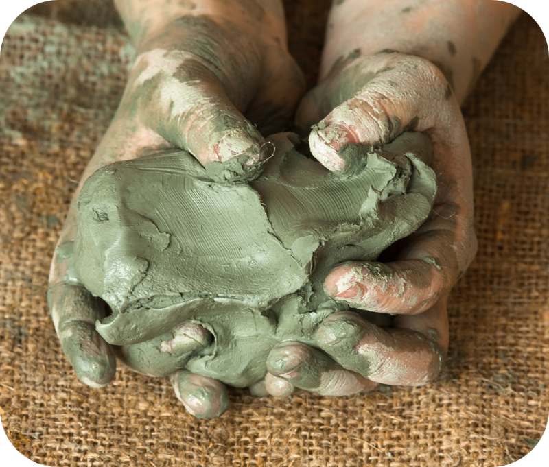
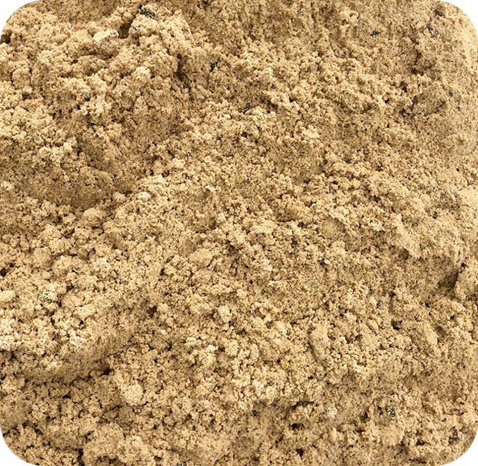
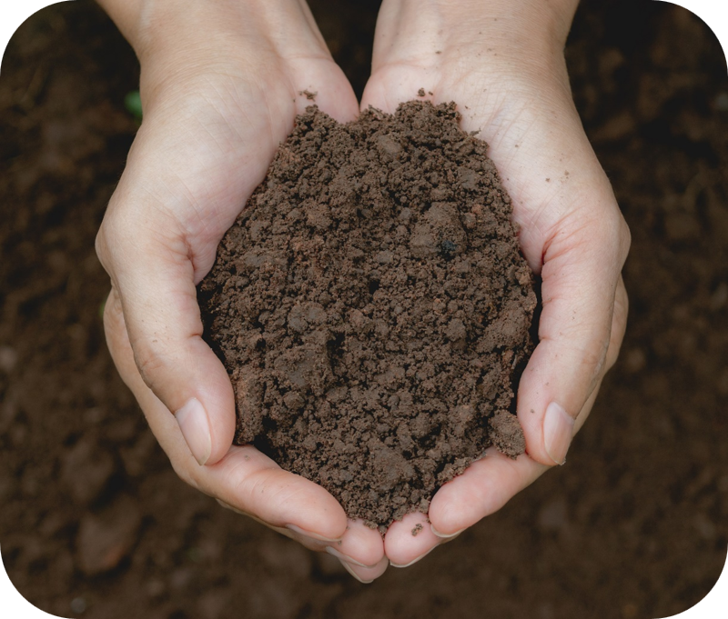

🌱
🪨
💧
🌿
🏺
← กลับหน้าหลัก
แบบฝึกหัด: สังเกตลักษณะดิน
📝
📝
แบบฝึกหัด
สังเกตลักษณะดิน
สังเกตลักษณะทางกายภาพของดินในภาพ แล้วตอบคำถามให้ถูกต้อง
ตอบแล้ว 0 / 9 ข้อ
👀
วิธีทำ:
สังเกตภาพดินด้านซ้ายแล้วเลือกคำตอบที่ถูกต้อง กดปุ่ม
"ตรวจคำตอบ"
เพื่อดูเฉลย

1
ลักษณะเนื้อดิน
-- เลือกคำตอบ --
หยาบ ร่วนซุย ไม่ติดมือ
เนียนละเอียด เหนียวติดมือ
ปานกลาง ร่วนนุ่ม
การอุ้มน้ำของดิน
-- เลือกคำตอบ --
อุ้มน้ำได้น้อย น้ำซึมผ่านเร็ว
อุ้มน้ำได้ปานกลาง
อุ้มน้ำได้มาก น้ำซึมผ่านยาก
ชนิดของดิน
-- เลือกคำตอบ --
ดินทราย
ดินร่วน
ดินเหนียว
🔍 ตรวจคำตอบ

2
สีของดิน
-- เลือกคำตอบ --
น้ำตาลเข้ม หรือดำ
น้ำตาลอ่อน หรือเหลืองทอง
เทาอมเขียว
การจับตัวของดิน
-- เลือกคำตอบ --
ร่วนซุย ไม่จับตัว กระจายตัวง่าย
เหนียวแน่น จับตัวดี
จับตัวปานกลาง
ชนิดของดิน
-- เลือกคำตอบ --
ดินทราย
ดินร่วน
ดินเหนียว
🔍 ตรวจคำตอบ

3
ลักษณะเนื้อดิน
-- เลือกคำตอบ --
หยาบมาก เม็ดใหญ่เห็นชัด
ร่วนนุ่ม เนื้อละเอียดปานกลาง
เหนียวมาก ปั้นได้ง่าย
สีของดิน
-- เลือกคำตอบ --
น้ำตาลอ่อน เหลืองทราย
น้ำตาลเข้ม ดำอมน้ำตาล
เทาอมเขียว
ชนิดของดิน
-- เลือกคำตอบ --
ดินทราย
ดินร่วน
ดินเหนียว
🔍 ตรวจคำตอบ
🌟
ยอดเยี่ยม!
9/9
คุณตอบถูกต้องทุกข้อ เก่งมากเลย!
🔄 ทำแบบฝึกหัดใหม่